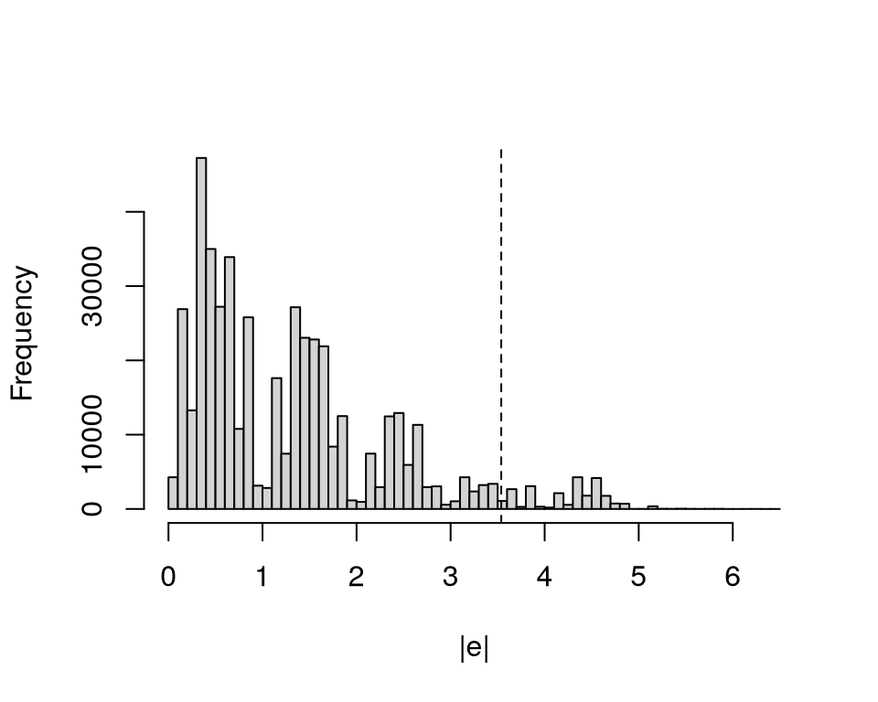

14 不确定性
从模型到意义 - 中文翻译
来源：Vincent Arel-Bundock，《从模型到意义：如何在 R 和 Python 中解释统计模型》——第 14 章 不确定性。 来源说明：截至 2026-09-19，修订版本 870f15a0 的公开代码仓库不包含本章的完整 .qmd 源文件。本页面根据同日下载的公开 HTML 快照翻译而成。因此，R/Python 代码和图形均以静态形式展示；上游代码未在本站重新执行。 网站文本 (C) 2025 Vincent Arel-Bundock，保留所有权利；marginaleffects 软件代码采用 GPL-3 许可证。 本页面为中文翻译，并非原文；其翻译和发布依据本 Notes 网站所使用的授权声明进行。
本章介绍了四种量化感兴趣量周围不确定性的方法：delta 方法、自助法、基于模拟的推断和保形预测。我们讨论每种策略背后的直觉，并通过“手动”实现简单版本来强化这种直觉。代码示例用于教学目的；更稳健、便捷的实现由 marginaleffects 包提供。不熟悉多元微积分基础的读者可以跳过本章。
14.1 Delta 方法
delta 方法是一种用于近似随机变量函数方差的统计技术。例如，数据分析者经常希望通过相减来比较回归系数或预测概率。这类比较可以表示为模型参数的函数，但这类变换量的方差（以及标准误）往往难以通过解析方式推导。delta 方法提供了一种便捷的方式来近似这些方差，使我们能够量化本书讨论的大多数感兴趣量周围的不确定性。
delta 方法实用、灵活且快速。然而，这一技术也有重要局限：它依赖粗略的线性近似，其理想性质取决于估计方法的渐近正态性1，并且只有当函数在其参数邻域内连续可微时才有效。当分析者认为这些条件不成立时，可以转向自助法或基于模拟的推断。2
许多教材都讨论并证明了 delta 方法的理论性质（Wasserman 2004；Hansen 2022b；Berger and Casella 2024）。本节其余部分不再重新证明这些性质，而是提供一个侧重计算的实践教程。我们的目标是通过说明如何在两种情形下手动计算标准误来强化直觉：单变量和多变量。然后，我们简要考察稳健或聚类标准误的使用。
14.1.1 单变量 delta 方法
本节使用 delta 方法计算含一个参数的函数的标准误：单个回归系数的自然对数。考虑一个包含三个测量变量的情形：\Y\、\X\ 和 \Z\。利用这些变量，分析者估计一个线性回归模型。
\ Y = _1 + _2 X + _3 Z + \
令 \\_2\ 为真实参数 \beta_2\ 的估计方法。我们知道 \\_2\ 的方差为 \(\hat{\beta}\_2)\，但我们并不关心这个特定统计量。相反，我们的目标是计算估计方法函数的方差：\\left \[\log(\hat{\beta}\_2) \right \]\。
为此，我们应用泰勒级数展开。这一数学工具允许我们将 \(\hat{\beta}\_2)\ 这样的光滑函数重写为由导数和多项式构成的无穷和。这有助于简化并近似复杂函数。
函数 \g(a)\ 的泰勒级数总是以一个特定点 \\ 为参照来表示，我们希望研究 \g\ 在该点的行为。一般而言，该近似可以写成
\ g(a) = g() + g’()(a - ) + (a - )^2 + + (a - )^n + , \
其中，\g^{(n)}(\alpha)\ 表示在 \a=\alpha\ 处计算的 \g(a)\ 的第 \n\th 阶导数。
方程 14.2 是一个无穷级数，因此计算其所有项并不现实（也不可能）。在实际应用中，我们会舍弃高阶项，从而截断级数。例如，保留 方程 14.2 右侧的前两项，就可以构造一阶泰勒级数。
现在，我们可以围绕参数 \beta_2\ 的真实值，将感兴趣的函数 \(\hat{\beta}\_2)\ 近似为一阶泰勒级数。回顾 \log(\beta_2)\ 的导数为 \1/\beta_2\，并将适当的值代入方程 14.2的前两项。
\\
现在，将该近似代入方差算子。
\ [(_2)] [(_2) + (_2 - _2)] \
这个方差的线性化近似很有用，因为它允许我们进一步简化。首先，我们知道像 \_2\ 这样的常数的方差为零，这意味着方程 14.3中的一些项可以消去。其次，我们可以应用方差的缩放性质3，将表达式改写为
\ [(_2)] [_2] \
方程 14.4 给出了近似 \(\hat{\beta}\_2)\ 方差的公式。该公式以 \(\hat{\beta}\_2)\ 表示，也就是估计标准误的平方。方程 14.4还包含表达式 \1/\beta_2\。由于我们不知道该项的真实值，因此退而使用 \1/\hat{\beta}\_2\ 作为代入估计。4
为说明该公式如何应用于实践，我们模拟符合方程 14.1的数据，并利用这些数据拟合一个线性回归模型。
set.seed(48103)
X = rnorm(100)
Z = rnorm(100)
Y = 1 * X + 0.5 * Z + rnorm(100)
dat = data.frame(Y, X, Z)
mod = lm(Y ~ X + Z, data = dat)
summary(mod)
Estimate Std. Error t value Pr(>|t|)
(Intercept) -0.05033 0.09740 -0.517 0.6065
X 1.12963 0.09929 11.377 <0.001
Z 0.28486 0.11013 2.587 0.0112真实的 \_2\ 为 1，但估计的 \\_2\ 为
b2 = coef(mod)[2]
b2
[1] 1.129626估计的 \\_2\ 方差为
v = vcov(mod)[2, 2]
v
[1] 0.009859151我们估计值的自然对数 \(\hat{\beta}\_2)\ 为
log(b2)
[1] 0.1218865利用方程 14.4，我们计算 \\left \[\log(\hat{\beta}\_2)\right \]\ 的 delta 方法估计值，并取其平方根以获得标准误。
sqrt(v / b2^2)
[1] 0.08789924为验证这一结果是否正确，我们可以使用 marginaleffects 包中的 hypotheses() 函数。正如第 4 章所述， hypotheses() 可以计算模型参数的任意函数及其标准误。
library(marginaleffects)
hypotheses(mod, "log(b2) = 0")
|————|———-|————|——|————-|———|——–|
令人欣慰的是，我们“手动”计算的 \(\hat{\beta}\_2)\ 估计值和标准误，与调用 hypotheses()“自动”获得的结果相同。
14.1.2 多变量 delta 方法
delta 方法的单变量版本可以推广到多变量情形。令 \=\\beta_1,\beta_2,\ldots,\beta_k\\ 为输入参数向量，令 \=\theta_1,\theta_2,\ldots,\theta_n\\ 表示某个 \h\ 变换的向量值输出。例如，\\ 可以是回归系数向量。\Theta\ 可以是单个汇总统计量，也可以是长度为 \n\ 的向量，其中数据集中的每个观测对应一个拟合值。5
我们的目标是计算 \\ 每个元素的标准误。为此，我们用矩阵记法表示多变量 delta 方法
\ (h()) = J^T () J, \
其中，\h(\mathcal{B})\ 是参数向量 \\ 的函数，而 \(h(\mathcal{B}))\ 是该函数的方差。
\J\ is the Jacobian of \h\. The number of rows in that matrix is equal to the number of parameters in the input vector \\. The number of columns in \J\ is equal to the number of elements in the output vector \\, that is, equal to the number of transformed quantities of interest that \h\ produces. The element in the \i\th row and \j\th column of \J\ is a derivative which characterizes the effect of a small change in \_i\ on the value of \_j\.
\ J = \[\begin{bmatrix} \frac{\partial \theta_1}{\partial \beta_1} & \frac{\partial \theta_2}{\partial \beta_1} & \cdots & \frac{\partial \theta_n}{\partial \beta_1} \\ \frac{\partial \theta_1}{\partial \beta_2} & \frac{\partial \theta_2}{\partial \beta_2} & \cdots & \frac{\partial \theta_n}{\partial \beta_2} \\ \vdots & \vdots & \ddots & \vdots \\ \frac{\partial \theta_1}{\partial \beta_k} & \frac{\partial \theta_2}{\partial \beta_k} & \cdots & \frac{\partial \theta_n}{\partial \beta_k} \end{bmatrix}\]\
现在回到方程 14.1定义的线性模型，其系数为 \_1\、\_2\ 和 \_3\。假设我们希望估计该模型第 2nd 和第 3rd 个系数之间的差异。这个差异可以表示为三个系数函数 \h\ 的单个输出 \theta\
\ = h(_1,_2,_3) = _2 - _3, \
or
b = coef(mod)
b[2] - b[3]
[1] 0.8447632为量化 \\ 周围的不确定性，我们使用多变量 delta 方法公式。在方程 14.5中，\(\mathcal{B})\ 指回归系数的方差-协方差矩阵，我们可以使用 vcov() 函数提取该矩阵。
V = vcov(mod)
V
(Intercept) X Z
(Intercept) 0.0094869866 0.0009058965 0.0002349717
X 0.0009058965 0.0098591507 0.0005353338
Z 0.0002349717 0.0005353338 0.0121275336\J\ 矩阵根据 \h\ 函数定义。在方程 14.6中，\h\ 接受三个参数作为输入并返回一个值。因此，相应的 \J\ 矩阵必须有 3 行和 1 列。我们通过对方程 14.6 相对于每个输入参数求偏导，来填充这个矩阵。
\ J = [ \[\begin{matrix} \frac{\partial \theta}{\beta_1} \\ \frac{\partial \theta}{\beta_2} \\ \frac{\partial \theta}{\beta_3} \end{matrix}\] ] = [ \[\begin{matrix} 0 \\ 1 \\ -1 \end{matrix}\]] \
提取 \(\mathcal{B})\ 并为感兴趣量 \\ 定义适当的 \J\ 后，我们现在使用方程 14.5计算标准误。
J = matrix(c(0, 1, -1), ncol = 1)
variance = t(J) %*% V %*% J
sqrt(variance)
[1] 0.1446237因此，我们估计 \_2\ 与 \_3\ 之间的差异为 0.845，与该差异相关的标准误为 0.145。再次将这一结果与 hypotheses() 函数的输出进行比较，可以看到两者完全相同。
hypotheses(mod, hypothesis = "b2 - b3 = 0")
|————|———-|————|——|————-|——-|——–|
14.1.3 稳健或聚类标准误
前几节的计算依赖于方差-协方差矩阵的“经典”估计。这些估计很有用，但依赖于一些强假设，而这些假设排除了自相关、异方差性和聚类等普遍现象。6 当出现这些模式时，经典标准误可能无法准确刻画估计值的不确定性。
为了解这些支撑经典标准误的假设如何放宽，我们考虑一个简单的线性回归
\ Y = X + , \
其中，\Y\ 是一个 \n \times 1\ 的结果变量向量；\X\ 是一个包含截距项的 \n \times k\ 协变量矩阵；\\ 是一个 \k \times 1\ 的系数向量；\\ 是一个 \n \times 1\ 的误差向量。我们可以使用标准公式，通过普通最小二乘法估计回归系数。
\ =(XTX){-1}(X^TY) \
在这种情形下，计算 \\ 方差的通常方法是使用“夹心”公式。之所以这样称呼，是因为其中包含一个夹在两个相同“面包”部分之间的“馅料”表达式。因此，普通最小二乘法的经典方差估计可以写成
\ Var() = (XTX){-1}(2_XTX)(XTX){-1}, \
其中，\^2\_\varepsilon\ 可以通过计算估计残差的方差来估计。
为说明这些公式的使用，我们加载 Thornton（2008）数据，并拟合一个包含一个预测变量和截距项的线性回归模型。
library(sandwich)
library(marginaleffects)
dat = get_dataset("thornton")
dat = na.omit(dat[, c("incentive", "outcome")])
mod = lm(outcome ~ incentive, data = dat)
summary(mod)
Estimate Std. Error t value Pr(>|t|)
(Intercept) 0.33977 0.01695 20.04 <0.001
incentive 0.45106 0.01919 23.50 <0.001通过构造设计矩阵 \X\、响应矩阵 \Y\，并应用方程 14.7，可以手动得到相同的估计值。
X = cbind(1, dat$incentive)
Y = dat$outcome
solve(crossprod(X, X)) %*% crossprod(X, Y)
[,1]
[1,] 0.3397746
[2,] 0.4510603这些系数的方差-协方差矩阵通过方程 14.8得到。
e = Y - predict(mod)
var_e = sum((e - mean(e))^2) / df.residual(mod)
bread = solve(crossprod(X))
meat = var_e * crossprod(X)
V = bread %*% meat %*% bread
V
[,1] [,2]
[1,] 0.0002874265 -0.0002874265
[2,] -0.0002874265 0.0003684119这与基础 R 中 vcov() 函数返回的矩阵相同。
vcov(mod)
(Intercept) incentive
(Intercept) 0.0002874265 -0.0002874265
incentive -0.0002874265 0.0003684119该矩阵对角元素的平方根就是本节开头模型摘要中打印的标准误。
sqrt(diag(V))
[1] 0.01695366 0.01919406关于经典标准误的一个关键假设，在方程 14.8中得到了明确体现。在该公式及其实现代码中，\^2\_\varepsilon\ 是一个单一数值，被视为反映每个观测值不确定性的常数。但在许多应用情境中，误差的方差并不一致，也就是说存在异方差性。7
应对这一挑战的一种常见策略是报告“稳健”标准误，也称为“异方差一致”或“Huber-White”标准误。有许多类型的稳健标准误可用，用于处理不同的数据问题（Zeileis et al. 2020）。下面的代码展示了处理异方差性的一种最简单方法。它使用与经典情形相同的夹心公式，但“馅料”部分在对角线上包含一个平方残差矩阵。这使我们能够更灵活地处理样本中预测误差方差的变化。
meat = t(X) %*% diag(e^2) %*% X
bread %*% meat %*% bread
[,1] [,2]
[1,] 0.0003612364 -0.0003612364
[2,] -0.0003612364 0.0004362886使用功能强大的 sandwich 包中的 vcovHC() 函数，可以更方便地计算相同的方差-协方差矩阵；该包支持许多超出线性回归范围的模型和估计方法。
vcovHC(mod, type = "HC0")
(Intercept) incentive
(Intercept) 0.0003612364 -0.0003612364
incentive -0.0003612364 0.0004362886所有 marginaleffects 函数都有一个 vcov 参数，允许我们报告各种类型的稳健标准误。省略该参数时，marginaleffects 返回带有经典标准误的估计值。要改为报告异方差一致标准误，只需添加 vcov。例如，下一行代码返回一个平均反事实比较（风险差）的估计值及其异方差一致标准误。
avg_comparisons(mod, vcov = "HC0")
|———-|————|——|————-|——-|——–|
vcov 参数接受若干类似上例的字符串快捷方式。它还可以接受方差-协方差矩阵、返回此类矩阵的函数，或用于指定聚类的公式。下面的代码块展示了几个例子，但建议读者在 R 中输入 ?hypotheses，或在 Python 中输入 help(hypotheses)，查阅手册页。
V = sandwich::vcovHC(mod)
avg_comparisons(mod, vcov = V) # heteroskedasticity-consistent
avg_comparisons(mod, vcov = ~ village) # clustered by village
总之，我们看到 delta 方法是获取大量感兴趣量标准误的一种简单、快速且灵活的方法。它是 marginaleffects 包所有函数采用的默认方法。通过将 delta 方法与稳健的方差-协方差矩阵估计相结合，分析者可以报告能够反映异方差性或聚类等常见数据特征的不确定性估计。
14.2 自助法
自助法是 Bradley Efron 及其同事在 20 世纪 70 年代和 80 年代开创的一种方法（Efron and Tibshirani 1994）。它是量化感兴趣量不确定性的一种强大策略。8
考虑一个我们希望计算的统计量 \T_n\。\T_n\ 是结果变量 \Y\、一些回归变量 \\ 和未知总体分布函数 \F\ 的函数：
\T_n = T_n ((Y_1,_1),,(Y_n,_n),F)\
感兴趣的统计量 \T_n\ 服从一个取样分布 \G\，该分布取决于未知的总体分布 \F\。如果我们知道 \F\，那么 \G\ 就可以直接得到。自助法的核心思想是利用模拟近似 \F\，然后在量化感兴趣量周围的不确定性时使用该近似。
实践中如何近似 \F\？自 20 世纪 80 年代以来，人们提出了许多自助模拟的变体。丰富的相关文献超出了本书范围，但考察其中一种最简单的方法很有启发性：非参数自助法算法。其思想是通过反复从观测样本中抽取数据，构建多个模拟数据集。借助这些数据集，我们可以多次估计感兴趣的统计量，并刻画其取样分布。
为作说明，我们考虑一个拟合 Thornton（2008）数据的简单线性模型。结果变量是 outcome，这是一个二元变量：寻求了解自身 HIV 状态的研究参与者取值为 1，其他人取值为 0。模型有三个系数，分别代表一个年龄类别。
dat = get_dataset("thornton")
mod = lm(outcome ~ agecat - 1, data = dat)
coef(mod)
agecat<18 agecat18 to 35 agecat>35
0.6718750 0.6787004 0.7277354 我们的实质性目标是确定 outcome=1 的个体比例在 35 岁以上年龄组中是否高于 18 至 35 岁组。换言之，感兴趣量是模型第 2nd 和第 3rd 个系数之间的差异。为方便起见，我们定义一个 statistic() 函数来计算这一差异。
statistic = \(model) coef(model)[3] - coef(model)[2]
statistic(mod)
[1] 0.04903501现在，让我们计算围绕这一量的自助法置信区间。这可以分五步完成：
从原始数据中有放回地抽取行。
在新数据集上拟合模型。
使用新拟合模型的参数估计值计算统计量。
多次重复步骤 1 至 3。
使用自助法分布的分位数，围绕感兴趣的统计量构建置信区间。
下面的代码实现这五个步骤。
sample_fit_compute = function() {
# Step 1: Sample
index = sample(1:nrow(dat), size = nrow(dat), replace = TRUE)
resample = dat[index, ]
# Step 2: Fit
mod_resample = lm(outcome ~ agecat - 1, data = resample)
# Step 3: Compute
statistic(mod_resample)
}
# Step 4: Repeat
set.seed(48103)
boot_dist = replicate(1000, sample_fit_compute())
# Step 5: Quantiles
ci = quantile(boot_dist, prob = c(0.025, 0.975))
ci
2.5% 97.5%
0.01435133 0.08701632 该分析表明，第 3 个系数与第 2 个系数之间的估计差异为 0.049，95% 置信区间为 \[0.014, 0.087\]。
marginaleffects 中的 inferences() 函数通过为 boot、rsample 和 fwb 包提供一致的接口，使这类分析变得更加容易（Canty and Ripley 2022；Frick et al. 2022；Greifer 2022）。这使用户能够应用各种自助重抽样方案。要使用此功能，我们调用任意一个核心 marginaleffects 函数，并将其输出传递给 inferences()。9
hypotheses(mod, "b3 - b2 = 0") |>
inferences(method = "boot", R = 1000)
|————|———-|——–|——–|
结果与手动得到的结果接近，但由于该过程具有随机性以及重抽样方案存在细微差异，结果会略有不同。
请注意，同样的工作流程也适用于其他 marginaleffects 函数，例如 avg_comparisons()。
avg_comparisons(mod) |> inferences(method = "boot")
|—————–|———-|———-|——–|
自助法是估计统计量取样分布的一种灵活方法。即使我们不知道感兴趣量的基础分布，它仍具有广泛适用性，因此是推导标准误和置信区间的强大工具。然而，自助法的计算成本可能很高，尤其是对于大型数据集或复杂模型。此外，当数据生成过程复杂时，选择恰当的重抽样方案可能具有挑战性。
14.3 模拟
估计感兴趣量周围不确定性的另一种策略是基于模拟的推断。这种方法是传统解析方法的替代方案，借助计算模拟的力量来估计给定参数函数的变异性。该方法最早的应用之一见于 Krinsky 和 Robb（1986），他们在回归建模情境下使用模拟来量化弹性估计值的取样不确定性。King 等人（2000）随后推广了这一策略及其在 clarify 软件中的实现。10
这一方法的基础假设是，基于回归的估计方法服从正态分布。这使我们能够利用多元正态分布的性质，模拟许多组系数和许多感兴趣量。该过程可以分为 3 步：
从多元正态分布中抽取许多组参数，其均值等于估计的系数向量，方差等于估计的协方差矩阵。
使用每组模拟系数计算统计量。
通过取模拟量的分位数，为感兴趣量构建置信区间。
正如 Rainey（2024）所指出的，这一过程可以被视为一种非正式的贝叶斯后验模拟。虽然它并不严格使用贝叶斯方法，但视角相似，都是利用模拟参数的分布来推断变换量周围的不确定性。通过反复从参数空间中抽样，我们可以更清楚地了解可能的变异性。
下面的代码实现了这一策略的一个简单版本。
# Step 1: Simulate coefficients
library(mvtnorm)
set.seed(48103)
coef_sim = rmvnorm(1000, coef(mod), vcov(mod))
# Step 2: Compute the quantity of interest
statistics = coef_sim[, 3] - coef_sim[, 2]
# Step 3: Build confidence intervals as quantiles
ci = quantile(statistics, probs = c(0.025, 0.975))
ci
2.5% 97.5%
0.01343765 0.08461654 请注意，基于模拟的置信区间与通过自助法或 delta 方法得到的区间略有不同，但总体量级相同。
我们可以使用 inferences() 函数获得类似结果。
hypotheses(mod, "b3 - b2 = 0") |>
inferences(method = "simulation", R = 1000)
|————|———-|——-|——–|
avg_comparisons(mod, variables = "agecat") |>
inferences(method = "simulation", R = 1000)
|—————–|———-|———-|——–|
基于模拟的推断易于实现、使用方便，并适用于广泛的模型。它用通过模拟得到的数值近似替代 delta 方法的解析近似。尽管基于模拟的推断计算成本通常高于 delta 方法，但通常比自助法更快，因为自助法需要多次重新拟合模型。
14.4 保形预测
在第 5 章中，我们使用 predictions() 函数计算拟合值周围的置信区间。这些区间旨在刻画基于模型的结果变量期望值的不确定性。
一个常见误解是，这些置信区间应经过校准，以覆盖一定比例的未见数据点。事实并非如此。实际上，使用 delta 方法构建的置信区间通常覆盖的样本外观测比例，会远低于其名义水平所暗示的比例。
为说明这一点，我们从均值为 \pi\ 的正态分布中随机抽取两个各含 25 个观测值的样本，进行一项模拟。\Y\{train}\ 集用于拟合模型，\Y\{test}\ 集用于检验模型预测的准确性。我们拟合的模型是只有截距项的线性回归，并使用 predictions() 函数计算结果变量期望值周围的 90% 置信区间。最后，我们检查测试集中的多少个观测值被该区间覆盖。
simulation = function(...) {
# Draw random training and test sets
Y_train = rnorm(25, mean = 3.141593)
Y_test = rnorm(25, mean = 3.141593)
# Fit an intercept-only linear model
m = lm(Y_train ~ 1)
# Predictions with 90% confidence interval
p = predictions(m, conf_level = .90)
# Does the confidence interval cover the true mean?
coverage_mean = mean(p$conf.low < 3.141593 & p$conf.high > 3.141593)
# Does the confidence interval cover out of sample observations?
coverage_test = mean(p$conf.low < Y_test & p$conf.high > Y_test)
out = c(
"Mean coverage" = coverage_mean,
"Out-of-sample coverage" = coverage_test)
return(out)
}
为了全面描绘性能，我们重复这一实验 1000 次，并报告各次实验的平均覆盖率。
set.seed(48103)
coverage = rowMeans(replicate(1000, simulation()))
coverage
Mean coverage Out-of-sample coverage
0.88100 0.24668 predictions() 产生的置信区间约有 90% 的时间覆盖结果变量的真实均值，这与我们使用 conf_level 参数请求的显著性水平相符。然而，这些置信区间只有 25% 的时间覆盖样本外观测。显然，如果我们希望一个区间覆盖预先指定比例的未见数据点，就不能依赖置信区间，而必须计算预测区间。
如何获得具有足够覆盖率的预测区间？在其出色的教程中，Angelopoulos 和 Bates（2022）将“保形预测”介绍为
“一种用户友好的范式，用于为此类模型的预测创建具有严格统计依据的不确定性集合/区间。关键在于，这些集合在无分布假设的意义下是有效的：即使没有分布假设或模型假设，它们也具有明确的、非渐近的保证。”
这些说法非同寻常，值得重复并加以强调。保形预测可以提供校准良好的区间，在有限样本中覆盖已知比例的样本外数据点，无需作出分布假设，即使预测模型设定错误也同样如此。
这里有三个主要注意事项。第一，marginaleffects 实现的保形预测算法针对可交换数据设计。11 当可交换性被违反时，例如时间序列数据中、观测值之间存在空间依赖时，或训练数据与测试数据之间存在分布漂移时，这些算法不提供覆盖率保证。第二，这些算法提供边际覆盖率保证，也就是说，它们保证随机测试点以给定概率落在区间内。在预测变量的不同分层中，这类区间在局部可能校准不佳。12 第三，保形预测区间的宽度通常取决于预测模型的质量，以及我们用来刻画预测“质量”的函数（即“评分”函数）的质量。13
对保形预测的详细技术处理超出了本书范围，但我们可以通过考虑两类预测任务来形成一些直觉：数值型和类别型结果变量。
14.4.1 数值型结果变量
本节对保形预测的介绍采用代码优先、而非理论密集的方式。为使内容具体化，我们将考虑一个数据集，其中包含超过 100 万名美国军人的人口统计信息，包括军衔等级、军种、性别、种族和军衔等变量。我们的预测任务是根据军人的特征，使用线性模型预测其军衔。
library(marginaleffects)
dat = get_dataset("military")
head(dat)
rownames grade branch gender race hisp rank officer
1 1 officer army male ami/aln TRUE 2 1
2 2 officer army male ami/aln TRUE 2 1
3 3 officer army male ami/aln TRUE 5 1
4 4 officer army male ami/aln TRUE 5 1
5 5 officer army male ami/aln TRUE 5 1
6 6 officer army male ami/aln TRUE 5 1有许多算法可用于构建预测区间。作为示例，我们使用最简单的算法之一：分割保形预测。该策略的第一步是将数据集随机分成三部分。14 训练集用于拟合预测模型。校准集由保形预测算法用于确定预测区间的适当宽度。测试集用于评估样本外预测的准确性。
set.seed(48103)
idx = sample(
c("train", "calibration", "test"),
size = nrow(dat),
replace = TRUE)
dat = split(dat, idx)
现在，我们使用训练数据拟合一个线性回归模型。我们的目标是根据四个预测变量预测一名军人的军衔。
mod = lm(rank ~ grade + branch + gender + race, data = dat$train)
summary(mod)
Estimate Std. Error t value Pr(>|t|)
(Intercept) 5.900195 0.020494 287.893 <0.001
gradeofficer -1.288080 0.006967 -184.880 <0.001
gradewarrant officer -2.167464 0.021205 -102.213 <0.001
brancharmy -0.192071 0.006500 -29.551 <0.001
branchmarine corps -0.705205 0.008311 -84.848 <0.001
branchnavy -0.064200 0.007314 -8.777 <0.001
gendermale 0.286665 0.007123 40.243 <0.001
raceasian 0.430081 0.022936 18.751 <0.001
raceblack 0.652504 0.019943 32.718 <0.001
racemulti -0.584264 0.026247 -22.260 <0.001
racep/i -0.025871 0.036875 -0.702 0.483
raceunk 1.261640 0.022067 57.173 <0.001
racewhite 0.401818 0.019304 20.816 <0.001分割保形推断利用了这样的假设：校准集中的观测值与测试集中的观测值具有可交换性。如果从这个意义上说校准集与测试集相似，那么合理的预期是，我们在其中一个集合中产生的预测误差，会与在另一个集合中产生的预测误差相似。15 因此，我们可以研究校准集，以了解预测区间应有多宽。
下面的代码完成三件事：(1) 使用拟合的线性模型在校准集中进行预测；(2) 计算校准集中每个观测值的绝对残差；(3) 绘制这些残差的分布。竖直虚线表示绝对残差的第 95th 分位数。
# Predictions in the calibration set
yhat_calib = predict(mod, newdata = dat$calib)
# Absolute residuals in the calibration set
resid_calib = abs(dat$calib$rank - yhat_calib)
# Plot
hist(resid_calib, breaks = 50, main = NULL, xlab = "|e|")
abline(v = quantile(resid_calib, 0.95), lty = 2)

如果校准集和测试集具有可交换性，那么合理的预期是，模型在测试集中产生的绝对预测误差中有 95% 会落在图 14.1中虚线的左侧。因此，如果我们希望构建一个至少覆盖测试集中 95% 点的预测区间，就可以定义常数 \d\，使其等于超过第 95th 百分位数的最小绝对残差，并将预测区间构建为 \\_i\pm d\。
# Predictions in the test set
yhat_test = predict(mod, newdata = dat$test)
# Measure the width of prediction intervals
q95 = quantile(resid_calib, probs = 0.95)
d = min(resid_calib[resid_calib > q95])
# Build prediction intervals
conformal_lo = yhat_test - d
conformal_hi = yhat_test + d
最后，我们可以检查测试集中有多少未见数据点被分割保形预测集合覆盖。
covered = dat$test$rank > conformal_lo & dat$test$rank < conformal_hi
mean(covered)
[1] 0.9515136我们发现测试集中有 95.2% 的观测值被覆盖。这与 95% 的目标覆盖率非常接近。
我们不必手动完成所有这些步骤，而可以使用 marginaleffects 包中的 inferences() 函数，它会产生相同的结果。
p = predictions(mod) |>
inferences(
method = "conformal_split",
conformal_calibration = dat$calib,
conformal_test = dat$test)
covered = p$rank > p$pred.low & p$rank < p$pred.high
mean(covered)
[1] 0.951513614.4.2 类别型结果变量
现在，让我们在分类任务中说明一种类似的策略。我们使用多项 logit 模型来预测每个观测值所属的军种：空军、陆军、海军陆战队或海军。
library(nnet)
mod = multinom(branch ~ gender * race, data = dat$train, trace = FALSE)
与上一节的关键区别在于，这里的结果变量是名义型而非数值型。对于测试集中的每个观测值，我们希望预测一个类别集合，使其以指定概率包含真实值。对于某个个体，模型可能预测类别集合 {navy, air force}，我们希望该集合包含该个体所属的真实军种。
回顾一下，保形预测要求我们量化校准数据集中预测的质量。与上一节基于残差的方法不同，我们使用“softmax 得分”来衡量类别预测的质量，该得分源自模型赋予真实（观测到的）类别的概率。此外，我们不准备如第 14.4.1 节中的留出校准集，而是使用一种基于交叉验证的替代保形算法。16 通过修改 inferences() 函数的参数，可以轻松完成这些更改。
set.seed(48103)
p = predictions(mod, conf_level = .8) |>
inferences(
R = 5,
method = "conformal_cv+",
conformal_score = "softmax",
conformal_test = dat$test)
inferences() 返回一个数据框，其中测试集中的每个观测值占一行。该数据框中的 pred.set 列为每个观测值包含一个可能类别的列表。
考虑测试集中的最后一个个体。如果对该个体的数据调用 predictions()，我们会发现最可能的 branch 值是“army”。
|————–|———-|————|——|————-|——–|——–|
predictions(mod, newdata = tail(dat$test, 1))
然而，只做出这个单点预测会产生误导，因为该个体实际上属于另一个军种。
tail(dat$test$branch, 1)
[1] "air force"幸运的是，我们的保形预测集合不只是一个点预测。事实上可以看到，与该个体对应的预测集合既包括最可能但不正确的军种，也包括正确的结果。
tail(p, 1)
|—————–|
更一般地，我们可以使用下面的代码检查测试集中的个体预测集合是否包含 branch 的真实值。
mean(unlist(Map(\(o, p) o %in% p, p$branch, p$pred.set)))
[1] 0.8202748正如预期，保形预测集合约有 80% 的时间包含正确值。
总之，本章探讨了统计分析中量化不确定性的各种方法，包括 delta 方法、自助法、基于模拟的推断和保形预测。每种方法都有独特优势，适用于不同情境，具体取决于我们愿意作出的假设和可用的计算资源。delta 方法利用线性近似快速给出结果，而自助法和基于模拟的推断利用计算能力从重抽样或模拟结果中进行抽取。保形预测提供无分布预测区间，在一定条件下可以预期覆盖指定比例的未见数据点。理解这些方法，可以为分析者提供一套全面的工具来处理分析中的不确定性。
Angelopoulos, Anastasios N., and Stephen Bates. 2022. A Gentle Introduction to Conformal Prediction and Distribution-Free Uncertainty Quantification. arXiv:2107.07511. arXiv. https://doi.org/10.48550/arXiv.2107.07511. Berger, Roger, and George Casella. 2024. Statistical Inference. 2nd ed. CRC Press. Canty, Angelo, and B. D. Ripley. 2022. boot: Bootstrap R (S-PLUS) Functions. https://cran.r-project.org/package=boot. Ding, Tiffany, Anastasios N. Angelopoulos, Stephen Bates, Michael I. Jordan, and Ryan J. Tibshirani. 2023. Class-Conditional Conformal Prediction with Many Classes. arXiv:2306.09335. arXiv. https://doi.org/10.48550/arXiv.2306.09335. Efron, Bradley, and R. J. Tibshirani. 1994. An Introduction to the Bootstrap. Chapman; Hall/CRC. https://doi.org/10.1201/9780429246593. Frick, Hannah, Fanny Chow, Max Kuhn, Michael Mahoney, Julia Silge, and Hadley Wickham. 2022. rsample: General Resampling Infrastructure. https://rsample.tidymodels.org. Greifer, Noah. 2022. fwb: Fractional Weighted Bootstrap. https://ngreifer.github.io/fwb/. Greifer, Noah, Steven Worthington, Stefano Iacus, and Gary King. 2023. clarify: Simulation-Based Inference for Regression Models. https://CRAN.R-project.org/package=clarify. Hansen, Bruce. 2022a. Econometrics. 1st ed. Princeton University Press.https://press.princeton.edu/books/hardcover/9780691223248/econometrics . Hansen, Bruce. 2022b. Probability and Statistics for Economists. 1st ed. Princeton University Press.https://press.princeton.edu/books/hardcover/9780691235899/probability-and-statistics-for-economists . King, Gary, Michael Tomz, and Jason Wittenberg. 2000. “Making the Most of Statistical Analyses: Improving Interpretation and Presentation.” American Journal of Political Science, 347–61. Krinsky, I., and A. L. Robb. 1986. “On Approximating the Statistical Properties of Elasticities.” Review of Economics and Statistics 68 (4): 715–19. Rainey, Carlisle. 2024. “A Careful Consideration of CLARIFY: Simulation-Induced Bias in Point Estimates of Quantities of Interest.” Political Science Research and Methods 12 (3): 614–23. https://doi.org/10.1017/psrm.2023.8. Thornton, Rebecca L. 2008. “The Demand for, and Impact of, Learning HIV Status.” American Economic Review 98 (5): 1829–63. Wasserman, Larry. 2004. All of Statistics: A Concise Course in Statistical Inference. Springer Texts in Statistics. Springer. https://doi.org/10.1007/978-0-387-21736-9. Zeileis, Achim, Susanne Köll, and Nathaniel Graham. 2020. “Various Versatile Variances: An Object-Oriented Implementation of Clustered Covariances in R.” Journal of Statistical Software 95 (1): 1–36. https://doi.org/10.18637/jss.v095.i01.
delta 方法依据这样的观察：如果参数的分布渐近正态，那么该参数光滑函数的极限分布也为正态（Wasserman 2004）。↩︎
令 \c\ 为常数，令 \\ 为随机变量，则 \\[c\lambda\]=c^2\text{Var}\[\lambda\]\。↩︎
自相关在时间序列估计中经常是一个问题：我们为时刻 \t\ 的观测单位产生的预测误差，与为同一单位在时刻 \t+1\ 产生的预测误差相关。研究参与者来自定义明确的群体（例如教室、社区或省份）时，误差相似的情况有时会产生聚类。当误差的方差在观测值之间不一致时，就会出现异方差性，例如模型对具有某些特征的单位产生更大的预测误差。↩︎
脚注 \\(\ref{ft-heteroskedasticity}\)\↩︎
可以通过直接将附加参数插入
inferences()调用，传递给自助法包中的控制函数。参见?boot::boot、?rsample::rsample和?fwb::fwb。↩︎clarify现在可用于R（Greifer et al. 2023）。↩︎通常的“独立同分布”假设是可交换性的一个限制更强的特殊情形。↩︎
近期提出了不同算法，以提供类别条件覆盖率保证（Ding et al. 2023）。这些算法目前尚未在
marginaleffects中实现，但已列入软件开发路线图。↩︎请注意，
marginaleffects实现的评分函数只取残差，即观测结果变量与预测值之差。这意味着type参数必须确保观测值和预测值处于可比较的尺度上（通常为type="response"或type="prob"）。↩︎在本例中，三个数据集的行数大致相同，但不一定必须如此。↩︎
由于过拟合，训练集中的预测误差通常小于校准集或测试集中的误差。↩︎
分割保形算法在这一情境下同样适用。我们使用交叉验证只是为了说明。↩︎